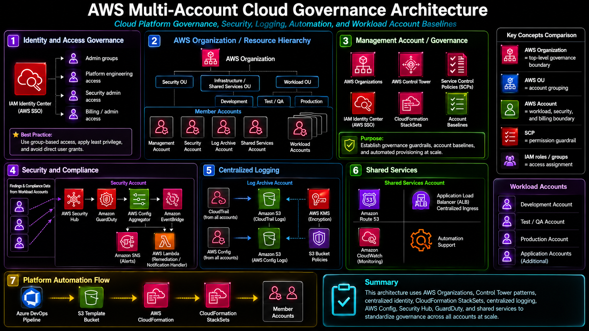

Project Documentation
Multi-Account Cloud Governance
This project documents the design, operation, and improvement of an AWS multi-account governance model. The work focused on account separation, landing-zone controls, IAM governance, service control policies, centralized logging, Config and CloudTrail visibility, Security Hub integration, CloudFormation StackSets, and repeatable operating patterns for secure cloud usage.
Background
As cloud environments grow, account creation alone is not enough. Each account needs a consistent operating model for identity, security, logging, network baselines, monitoring, cost visibility, and ownership. Without that structure, teams can end up with different IAM patterns, inconsistent logging, uneven security coverage, missing retention policies, unmanaged resources, and unclear responsibility for remediation.
The environment behind this project included multiple AWS accounts supporting different workloads, environments, and business functions. Some accounts were production-oriented, some supported development or pre-production work, and others supported shared infrastructure or governance functions. The purpose of the project was to help make those accounts easier to govern, easier to review, and more consistent from an operational and security perspective.
Scope
The scope covered multi-account governance rather than a single application deployment. The work included account baseline review, landing-zone controls, IAM and role patterns, CloudTrail and AWS Config coverage, security notification flows, Security Hub visibility, cost and usage visibility, and repeatable deployment methods for account-level controls.
The project also included reviewing account-level resources and identifying where standardization could improve operations. Common review areas included EC2, IAM, Lambda, S3, VPC, CloudWatch, CloudFormation, AWS Config, GuardDuty, billing reports, and tagging. The goal was to identify what was working, what was inconsistent, and what could be standardized through account baselines or automation.
Current State / Discovery
The discovery work showed that many accounts already had important governance components in place, such as CloudTrail logging, CloudWatch alarms, VPN-related monitoring, root MFA, default IAM roles, cost reporting, billing reports, GuardDuty, and AWS Config in most accounts. However, the level of consistency varied by account and by workload.
Some accounts had strong Infrastructure as Code adoption through CloudFormation and CI/CD pipelines. Other accounts contained more manually created resources, older IAM users or roles, unused resources, inconsistent retention policies, or resources that needed follow-up review. This showed why account governance needed to be treated as an ongoing operating process instead of a one-time setup task.
The review also highlighted the importance of standard account patterns. Baselines such as CloudTrail, AWS Config, GuardDuty, CloudWatch alarms, cost reports, default IAM roles, root MFA, tagging standards, and network controls give every account a common foundation before application teams build on top of it.
Architecture
The architecture followed a landing-zone model. AWS Organizations provided the top-level account structure. Control Tower-style patterns provided account baselines and guardrail behavior. Shared accounts supported logging, security visibility, and operational services. Workload accounts hosted application resources. CloudFormation StackSets and pipeline-driven deployments were used to apply controls across accounts and regions in a repeatable way.

Governance Controls
The governance model depended on multiple layers of control. AWS Organizations provided the account structure. SCPs provided high-level permission boundaries for member accounts and protected sensitive platform controls. IAM roles and permission boundaries helped define who could administer resources and how cross-account access was performed. IAM Identity Center supported centralized user access patterns instead of relying only on account-local IAM users.
Logging and visibility were key parts of the governance model. CloudTrail provided API activity visibility. AWS Config provided configuration and compliance visibility. Security Hub and GuardDuty supported security findings and threat-detection visibility. CloudWatch supported alarms, log monitoring, and operational signals. Cost and Usage Reports supported billing and cost review workflows.
Implementation Details
1. Account baseline review
I reviewed account-level governance components to understand which accounts had consistent controls and which accounts needed follow-up. The review included IAM users and roles, Config coverage, CloudTrail logging, CloudWatch alarms, GuardDuty, cost reporting, VPC patterns, S3 buckets, Lambda functions, EC2 resources, and CloudFormation usage.
2. Landing-zone and Control Tower review
I reviewed the landing-zone components that support centralized governance. This included understanding how Control Tower-style components create or manage logging, Config, notification, and role resources across accounts. The goal was to understand what should be treated as managed platform infrastructure and what should be handled through separate custom automation.
3. Logging and audit flow
Centralized logging was a key part of the governance pattern. CloudTrail and AWS Config logs were designed to flow into controlled S3 storage, with encryption, access controls, and retention behavior managed through platform standards. This made it easier to support audit visibility and avoid each account handling logs in a completely different way.
4. Config and security notification flow
Config compliance changes and Security Hub-related findings needed a path for review and notification. The governance pattern used event-driven components such as EventBridge, SNS, and Lambda-style forwarding behavior to move important compliance or security signals toward the security account or central notification path. This gave the platform team a better way to track changes across accounts.
5. StackSet-based standardization
CloudFormation StackSets were used as a repeatable deployment pattern for controls that needed to exist across multiple accounts or regions. This reduced manual console work and made it easier to standardize IAM roles, security controls, monitoring configuration, account baselines, and supporting platform resources.
6. Pipeline-driven deployment
Azure DevOps pipelines supported repeatable delivery of CloudFormation templates and StackSet updates. The general flow was to publish templates as build artifacts, stage the templates in an S3 deployment bucket, and then deploy or update the CloudFormation stack or StackSet from the management account. This allowed platform changes to move through a controlled release process instead of relying on one-off manual updates.
Validation
Validation was performed by reviewing account configuration, checking whether standard controls were present, confirming CloudFormation or StackSet deployment behavior, reviewing service outputs, and checking security and operational visibility in tools such as CloudTrail, AWS Config, Security Hub, GuardDuty, CloudWatch, and billing reports.
The validation process also included identifying drift or cleanup opportunities. Examples included reviewing old IAM users or roles, unused resources, missing retention policies, account-specific exceptions, manually created infrastructure, and resources that could be moved into reusable templates or operational runbooks.
Operational Runbook
The operational model for this project was not a one-time deployment. It required recurring review. A practical runbook for this work included checking account inventory, validating CloudTrail and Config coverage, reviewing Security Hub and GuardDuty findings, confirming CloudWatch alarms, reviewing IAM users and roles, validating cost and usage reporting, checking tagging coverage, and identifying resources that should be cleaned up, standardized, or automated.
For new accounts, the operating pattern was to apply standard account baselines early. That included identity, networking, logging, Config, security tooling, cost reporting, tagging, and any required Systems Manager or automation components. For existing accounts, the work was more discovery-heavy: identify what exists, compare it to the baseline, document gaps, and move repeatable fixes into automation where possible.
Outcome
The project improved cloud governance by making account structure, security visibility, logging, IAM controls, and deployment patterns easier to understand and operate. It also helped identify where accounts were consistent and where additional cleanup or standardization was needed.
The strongest operational value came from turning scattered account-level observations into repeatable patterns: use landing-zone baselines where appropriate, deploy reusable controls through CloudFormation and StackSets, keep logs centralized, use security services for visibility, and maintain governance through recurring account reviews instead of one-time setup work.
What This Demonstrates
This project demonstrates AWS platform engineering beyond basic resource creation. It shows multi-account governance, landing-zone operations, IAM and SCP awareness, centralized logging, security visibility, Infrastructure as Code, CI/CD delivery for platform controls, and operational review across a real AWS estate.